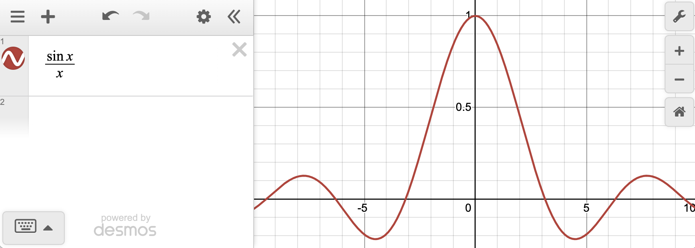

A short note for students who find themselves tempted to divide by zero in calculus.
In undergraduate calculus, students sometimes divide by zero and guess at the result. This post explains why division by zero is not a valid operation — it is not merely a convention, but a consequence of what division actually means.
In my undergraduate courses, especially the calculus series, I see lots of students who wish to divide by zero and then proceed to do so, often guessing at what the resulting answer should be! In this short blog post I hope to convince you that dividing by zero does not make mathematical sense, and that if you encounter division by zero, something has gone wrong.
First, what is division? $\frac{a}{b} = c$ means that if you multiply $c$ by $b$ you get $a$, that is $a = bc$. Supposing that $b = 0$ and $c \ne 0$, this of course means that $a = 0$. One might naïvely then suppose that $\frac{0}{0} = 0$, but this is not actually true. Why not? Well, the definition $\frac{a}{b} = c$ comes with a crucial restriction: it is only allowed when $b \ne 0$.
Consider the function
$$f(x) = \frac{\sin(x)}{x}.$$What is the value of $f(0)$? Naïvely plugging in $x = 0$ gives
$$f(0) = \frac{\sin(0)}{0} = \frac{0}{0}.$$So $f(0) = 0$, right? No! If you look at the graph of $f(x)$, you will see that $f(0) = 1$:

Let's go back to the multiplication picture. When we write $x \cdot f(x) = \sin(x)$, we are asking: what value of $f(x)$ makes $0 \times f(0) = 0$? The answer is anything at all — every real number times zero is zero. The equation $f(0) = \frac{0}{0}$ doesn't pin down a unique value; it is indeterminate. That is why you cannot divide by zero: the expression carries no information.
As you continue your calculus journey you will learn that the explanation here glosses over a lot of nuance — limits, L'Hôpital's rule, and more. But I hope this simple example convinces you that division by zero is not a minor technicality. If you find yourself dividing by zero, look over your work and check for algebra errors!